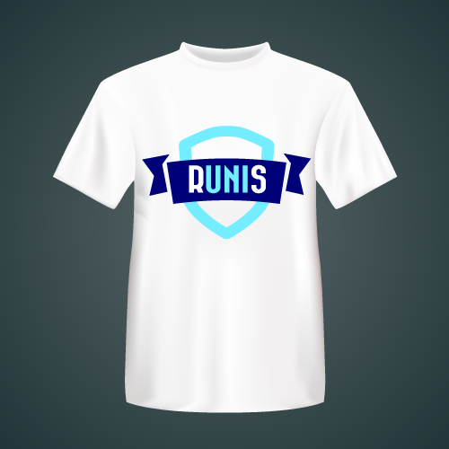

Benvinguts al club!
El running és un esport que reuneix totes les característiques necessàries per a mantenir-se en plena forma. La Universitat Oberta de Catalunya anima a tots els interessats a practicar-lo en grup, per tal de compartir interessos i afavorir la pràctica esportiva en grup.
Objectius
- Millorar la tècnica de carrera
- Desenvolupar exercicis de força específica i condició física per a corredors
- Millorar la flexibilitat i mobilitat articular
- Aprendre com afrontar diferents curses
- Aprendre a córrer de manera segura
- Rebre assessorament bàsic sobre material esportiu
Preus
La inscripció té un preu semestral de 30 €, o 50 € si el pagament es realitza de forma annual
Aconsegueix la teva samarreta!
Llueix la samarreta del club amb orgull per mostrar al món que ets un autèntic Runi. Mira la taula de talles i tria la teva quan facis la inscripció.